×
Click anywhere to close
Scale Army helps companies access pre-vetted nearshore talent across sales, marketing, technology and other business functions. My role focused on building and executing an organic growth strategy that connected content, SEO, social media, lead generation, attribution and conversion optimization into one measurable system — moving beyond content creation to answer a harder question: which content attracts the right audience, where those prospects come from, and what happens after they engage.
I approached organic growth as a full-funnel acquisition system rather than treating each channel independently — connecting SEO, content, social distribution, audience engagement, lead capture, attribution and conversion into one chain, so content could serve a different purpose at each stage of the buyer journey.
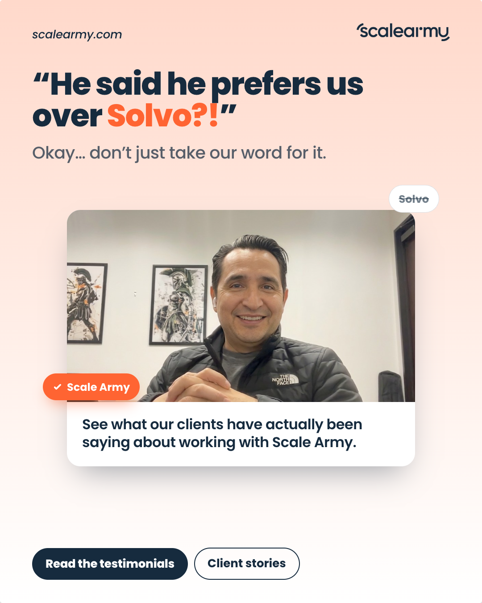
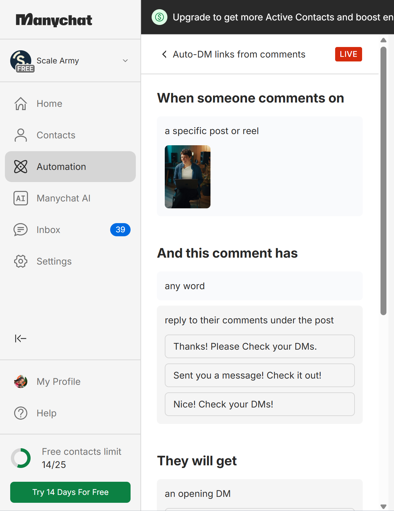
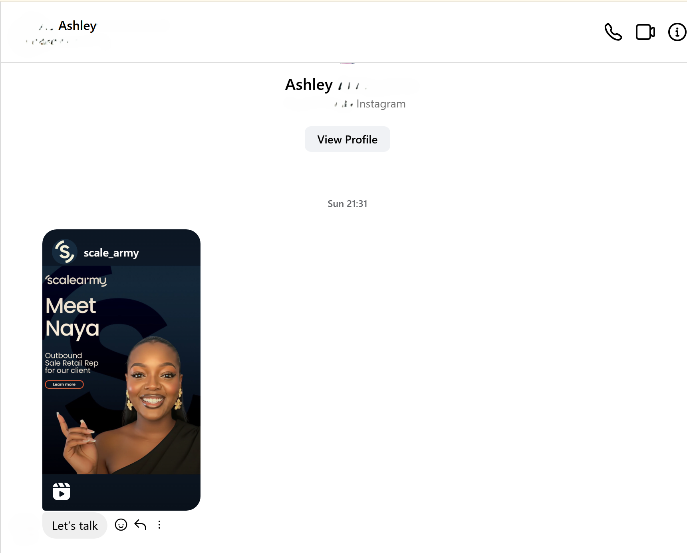
I researched and developed content around ICP pain points, search intent, industry trends and funnel stages — SEO-optimized blog content, LinkedIn articles, organic social content, educational posts, thought-leadership content, lead magnets and campaign-specific content. Each piece was built around a specific objective: attract, educate, engage, convert, re-engage.
+34% organic website traffic · 2,000+ weekly visits
+40% impressions, CTR & traffic through search-focused content.
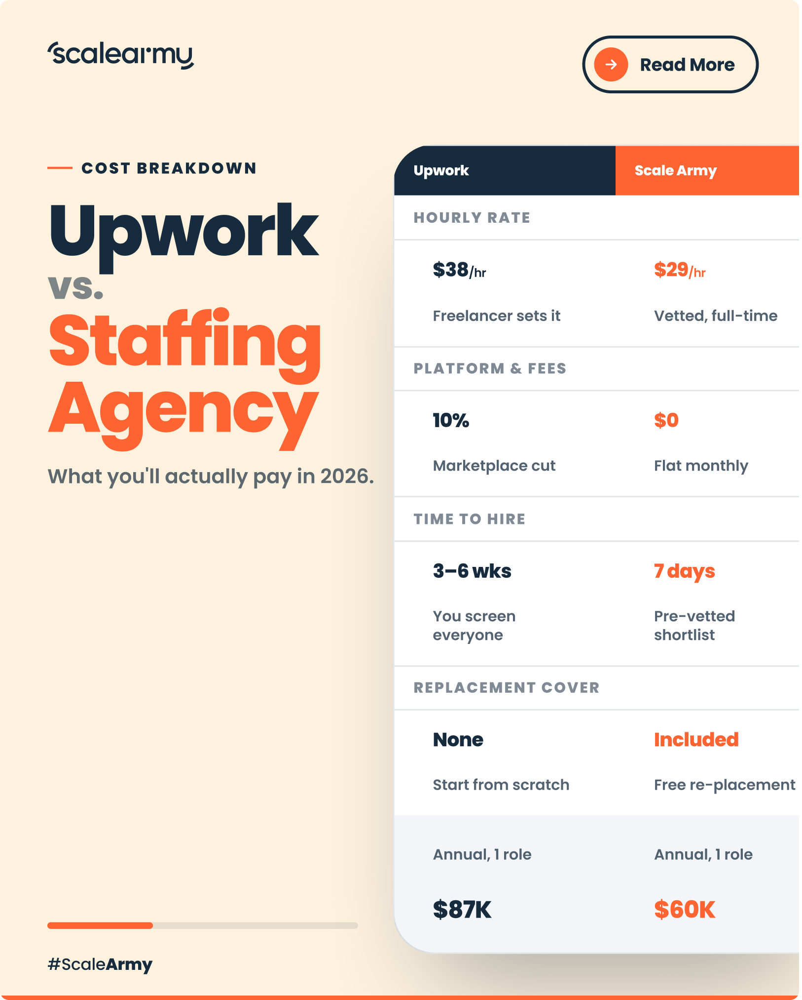
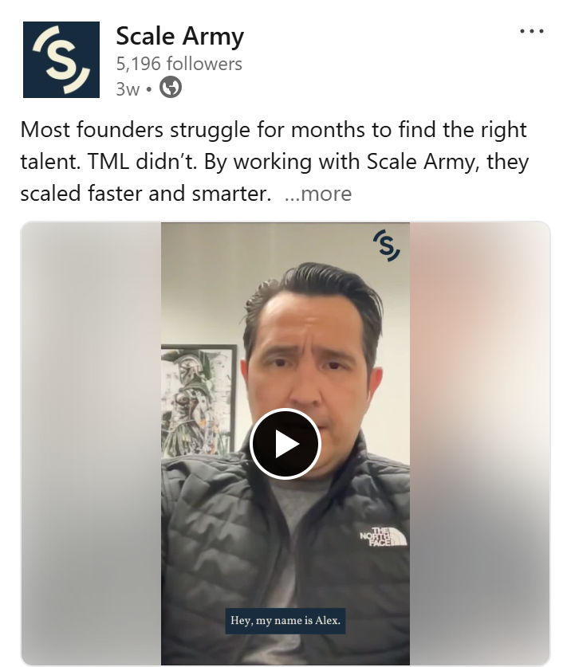
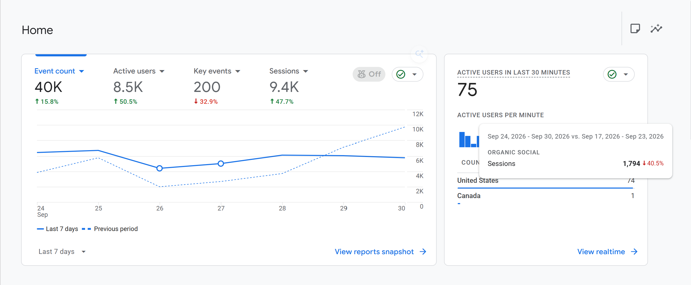
I connected organic content with measurable lead generation through inbound DMs, lead magnets, landing pages, UTM-tracked campaigns, organic social campaigns, community engagement and partnership opportunities — designed to capture and track prospects rather than letting conversations disappear into social inboxes.
290+ organic leads · 30% qualified inquiry → SQL
+12% referral traffic
I implemented tracking using HubSpot, Google Analytics, UTM parameters and Google Campaign Tracking, giving visibility into lead sources, campaign performance, lifecycle stages, MQLs, SQLs, content-driven conversions and funnel performance. The question shifted from "did this post perform well?" to "did this activity contribute to acquisition and conversion?"
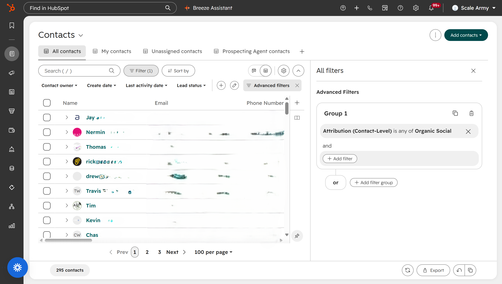
Confidential client info, names and revenue figures to be blurred before publishing.
To make organic growth reporting easier, I built a custom Organic Growth Dashboard centralizing website traffic, organic leads, campaign performance, lead attribution, content performance and conversion metrics — replacing disconnected spreadsheets and platform dashboards with one centralized view.
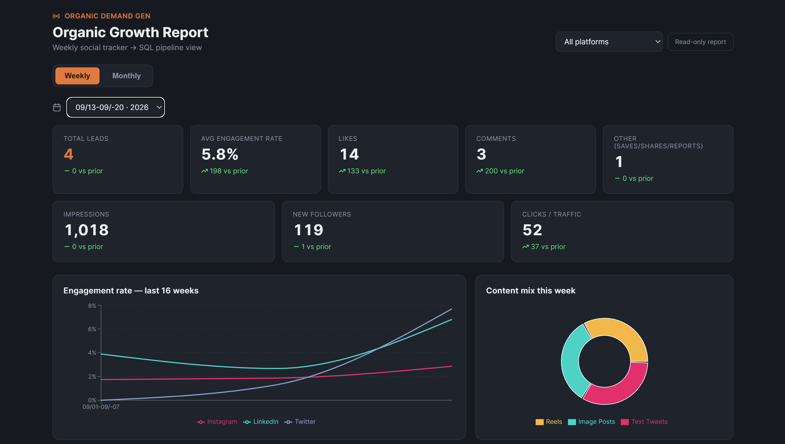
Built with: Claude Code · VS Code · Vercel · Supabase · GitHub
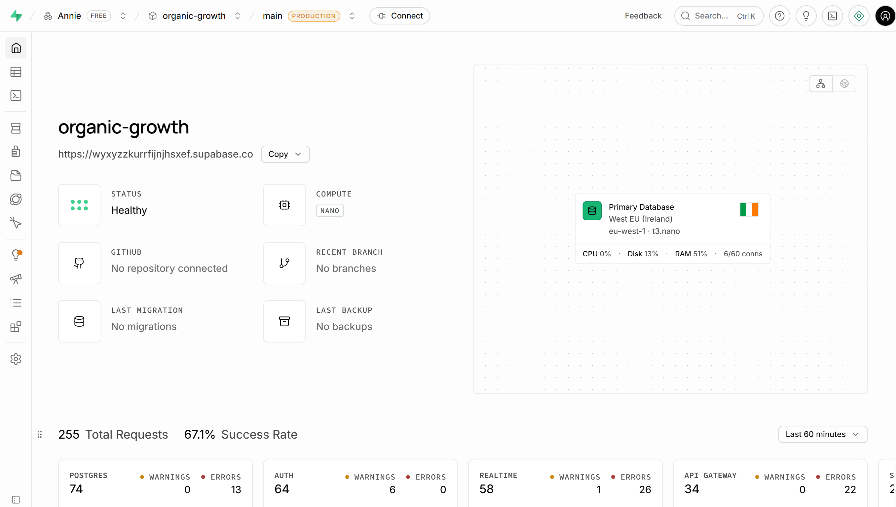
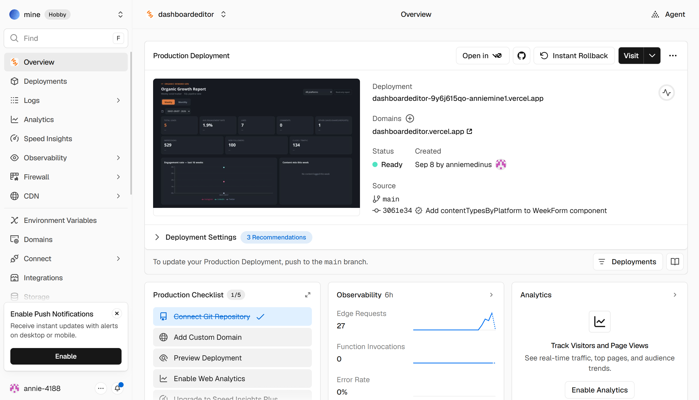
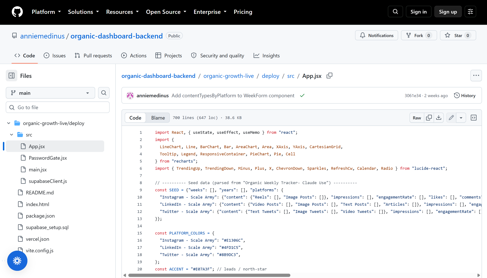
I developed Conversion Therapy, a custom web application that analyzes the customer journey from TOFU through BOFU, built around one question: what should we do when conversion starts declining? It tracks funnel performance and helps identify where prospects are dropping off, which content is performing, where engagement is declining, which stage needs intervention, and opportunities for re-engagement — rather than simply reporting that performance decreased, it's designed to help answer what to investigate next.
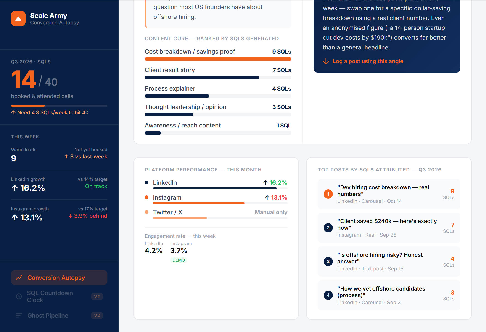
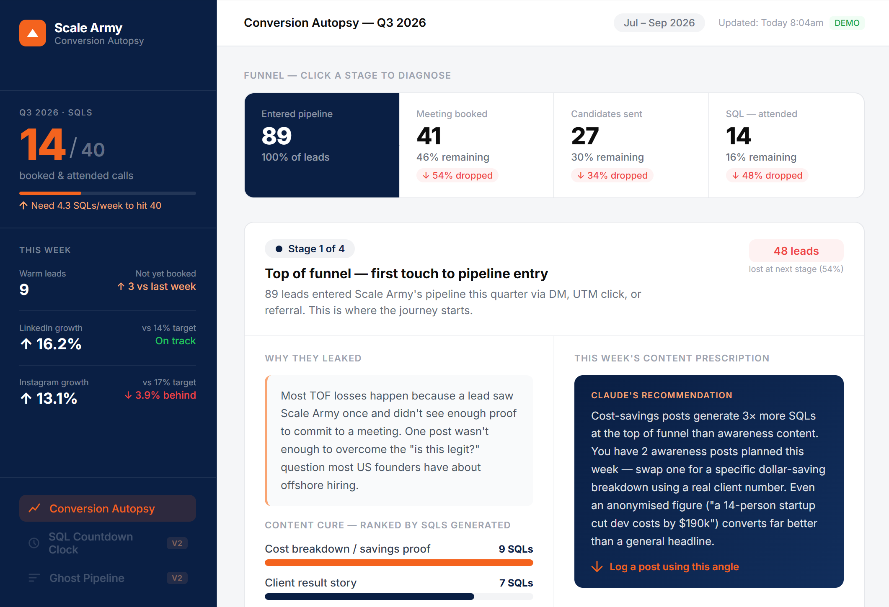
I developed themed content strategies and editorial calendars based on ICPs, audience pain points, funnel stages, campaign objectives, seasonal trends and industry conversations — collaborating with designers on branded content and producing 50+ video assets using CapCut and Adobe Premiere Pro.
+25% average post reach · +20% social engagement
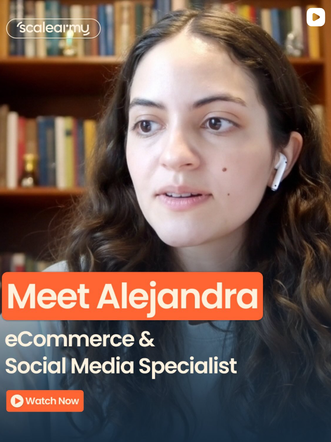
Organic growth wasn't limited to Scale Army's own platforms. I executed HARO-based PR outreach to build external visibility and strengthen executive thought leadership — securing a CEO feature in Authority Magazine — and supported the launch and development of the CEO's personal media platforms.
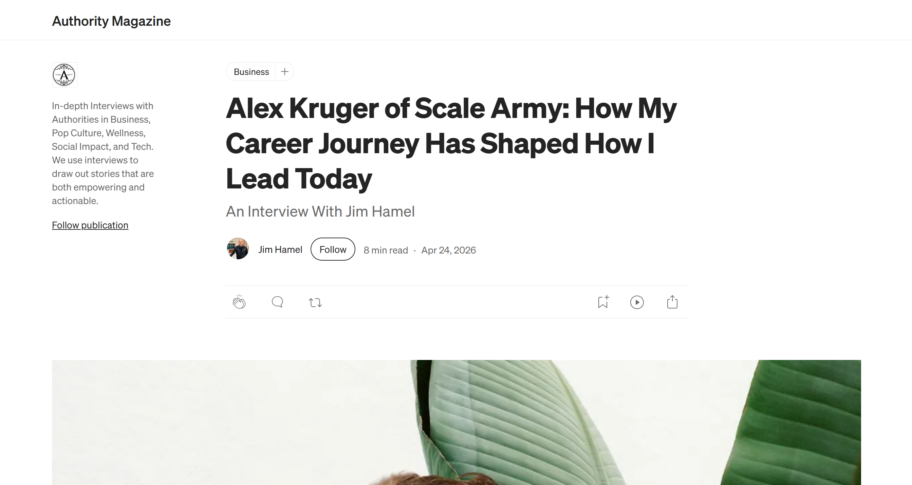
CEO Thought Leadership Placement — Authority Magazine.
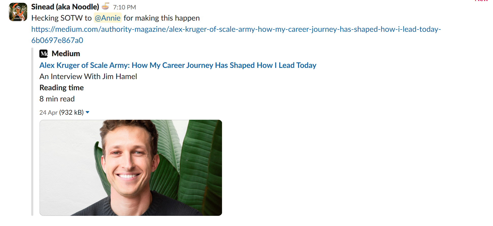
The HARO placement landing — shared with the team.
I supported broader brand initiatives including coordination around Scale Army's Shoptalk showcase, extending brand visibility beyond digital channels, and the launch and development of the CEO's personal brand platforms, creating additional opportunities for thought leadership and audience growth.
A data-driven acquisition strategy connecting SEO, content, social and conversion.
Custom reporting infrastructure built with Claude Code, Vercel, Supabase, VS Code and GitHub.
A funnel analysis and re-engagement application designed around TOFU → BOFU conversion performance.
UTM + HubSpot tracking infrastructure connecting organic activity to lead sources and lifecycle stages.
SEO, LinkedIn, social and thought-leadership content designed around ICPs and funnel stages.
Organic growth works best when content, data, technology and conversion strategy work together. My role evolved beyond simply creating social content — I built systems that connected content → traffic → engagement → leads → attribution → conversion, using data to identify where the funnel could be improved.
The result was an organic growth engine capable of not only attracting an audience, but measuring and optimizing what happened after the click.